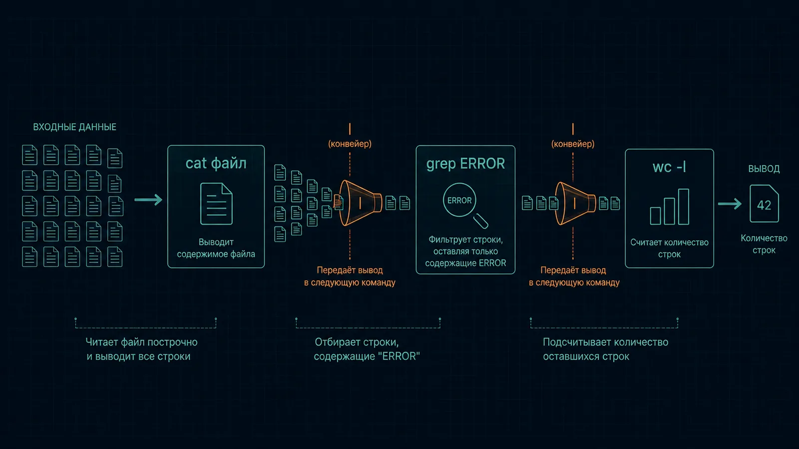

Аналогия: bash — язык, на котором отдаёшь команды текстом вместо кликов мышкой. Со временем это оказывается быстрее и куда легче автоматизировать.
Переменные и условия:
NAME="value" # без пробелов вокруг =
echo "$NAME" # переменные — всегда в кавычках
if [ -f file.txt ]; then
echo "есть"
else
echo "нет"
fi
for f in /var/log/*.log; do
echo "$f"
done
Пробелы вокруг = недопустимы: bash воспримет NAME = value как вызов команды NAME. В [ -f file.txt ] флаг -f проверяет, что файл существует; -d — что это папка, -z — что строка пустая, -n — что не пустая.
Конвейер | передаёт вывод одной команды на вход следующей, перенаправления пишут в файлы:
grep ERROR app.log | wc -l # сколько строк с ERROR
command > out.log # вывод в файл (перезапись)
command >> out.log # дописать в конец
command 2> err.log # только ошибки (поток stderr)
command > all.log 2>&1 # и вывод, и ошибки в один файл
У каждой программы два выходных потока: stdout (1) для обычного вывода и stderr (2) для ошибок. 2>&1 означает «отправь ошибки туда же, куда идёт обычный вывод».
Текстовые утилиты, без которых редкий скрипт обходится:
grep -v "debug" file.log # исключить совпадения
grep -r "listen" /etc/nginx/ # искать по всем файлам в папке
cut -d',' -f2 file.csv # 2-е поле по разделителю
sort file.txt | uniq -c # отсортировать и посчитать повторы
awk '{print $1, $3}' file.log # 1-я и 3-я колонки
sed 's/old/new/g' file.txt # заменить текст
tail -f /var/log/syslog # следить за концом файла
find . -name "*.tmp" | xargs rm # передать результат как аргументы
sort перед uniq обязателен: uniq убирает только соседние повторы. sed 's/old/new/g': s — заменить, g — все вхождения в строке, а не только первое.
Скрипт — файл с командами, начинается с shebang и строгого режима:
#!/usr/bin/env bash
set -euo pipefail # упасть при ошибке, на необъявленной переменной и в конвейере
chmod +x deploy.sh
./deploy.sh
Подробно о скриптах — параметры, функции, кавычки, trap, shellcheck — в 1.3 Bash.